Focus on the Hard: SAM-Based Prompt-Guided Refinement for RGB-T Semantic Segmentation
1Northwestern Polytechnical University
2Peking University
3Chongqing University of Posts and Telecommunications
† Corresponding author
IEEE Transactions on Image Processing (TIP), 2026
Volume 35, Pages 10559–10572
Abstract
RGB-Thermal semantic segmentation is essential for robust visual understanding in autonomous driving, surveillance, and search-and-rescue applications. While RGB and thermal modalities provide complementary information, cross-modal difficult regions with ambiguous boundaries and conflicting signals represent the primary performance bottleneck. Existing methods treat all regions uniformly and lack principled approaches for targeting these critical challenging areas. To address this limitation, we propose FocusSeg, a prompt-guided refinement framework embodying “Focus on the Hard” to systematically identify and refine difficult cross-modal regions. Our approach employs a two-stage framework: first establishing multi-modal understanding, then introducing intelligent point-based correction. Specifically, the framework integrates a Difficult Point Sampling Strategy (DPSS) for dynamic challenging region identification, a Multimodal Correction Module (MMCM) for training specialized correction heads, and a Point Correction Strategy (PCS) combining correction-head predictions with historical priors to generate reliable corrective prompts. These refined prompts guide a class-aware SAM framework toward superior targeted refinement. Extensive experiments on multiple RGB-T datasets demonstrate substantial improvements over state-of-the-art methods, with particularly notable gains in challenging scenarios involving cross-modal conflicts and boundary ambiguities. Our work establishes a new paradigm for intelligent resource allocation in multimodal segmentation tasks.
Method
FocusSeg learns a coarse multimodal understanding, then concentrates refinement on difficult regions through point prompts.
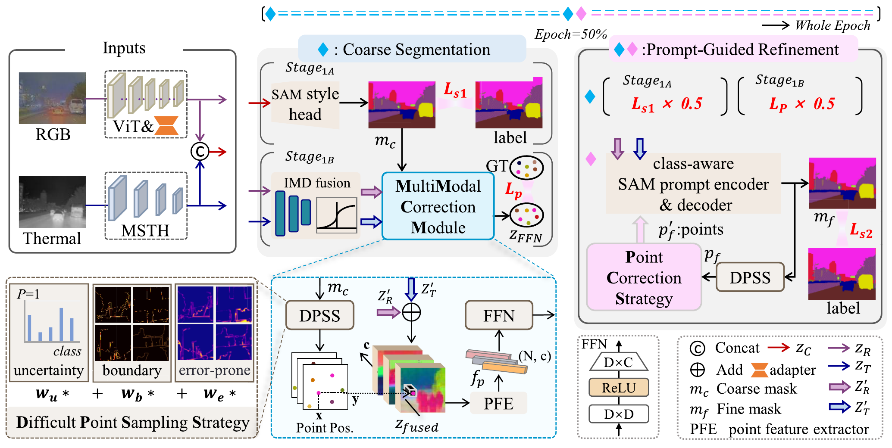
Difficult Point Sampling Strategy (DPSS) identifies challenging points using uncertainty, boundaries and error-prone regions. The Multimodal Correction Module (MMCM) learns point-wise correction from RGB and thermal features. The Point Correction Strategy (PCS) combines correction-head predictions with a historical prior to form reliable class-aware prompts.
Why focus on hard regions?
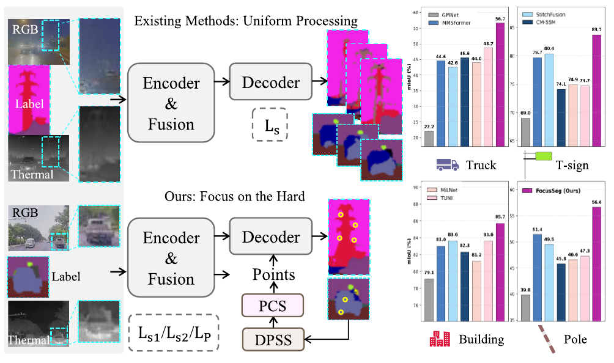
Point Correction Strategy
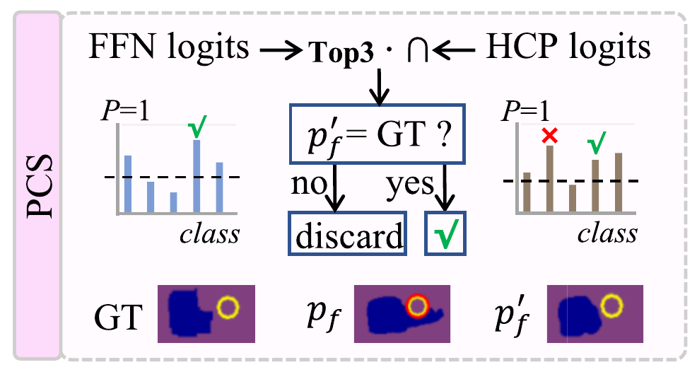
During training, PCS intersects correction-head and historical-prior candidates and filters unreliable corrections using ground-truth supervision. This training-time correction should be distinguished from automatic inference, which does not access ground-truth labels.
Quantitative Results
Reported mIoU: 58.10% on KP, 73.40% on FMB, 90.09% on PST900 and 79.08% on MSRS.
The tables below are reproduced as images from the published paper. Click any figure to enlarge.
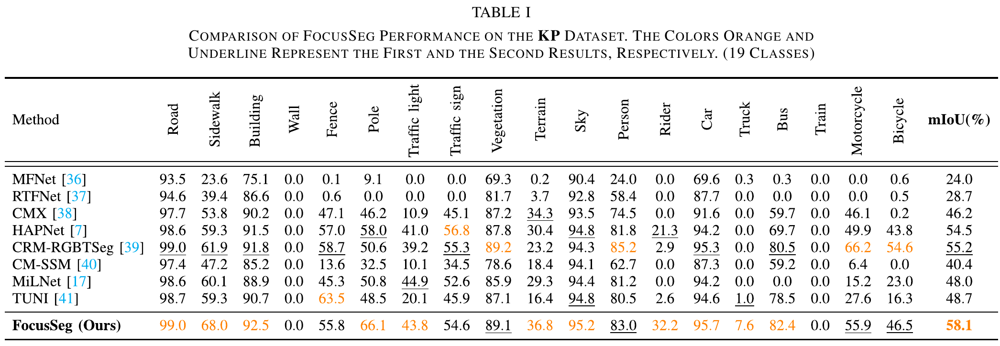
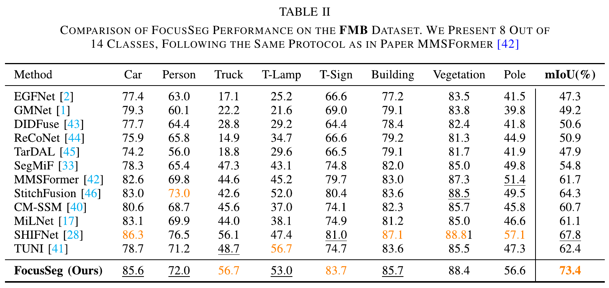
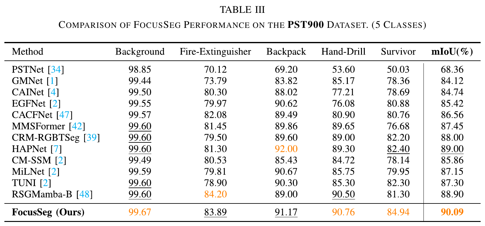
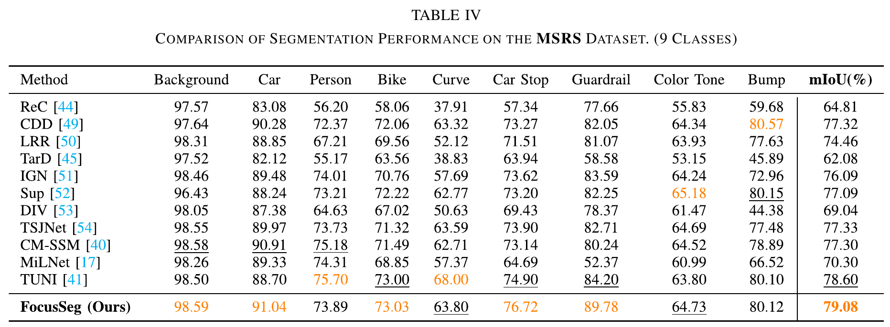
Qualitative Results
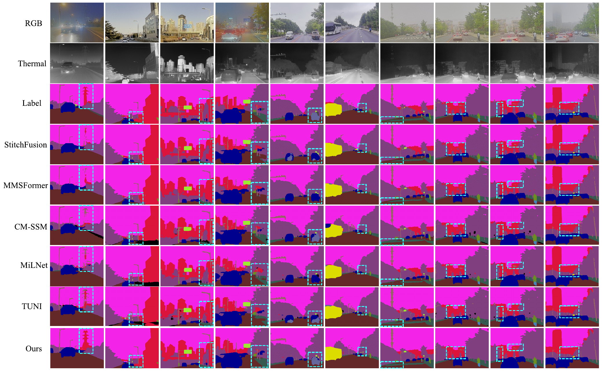
Comparisons on KP, PST900 and MSRS
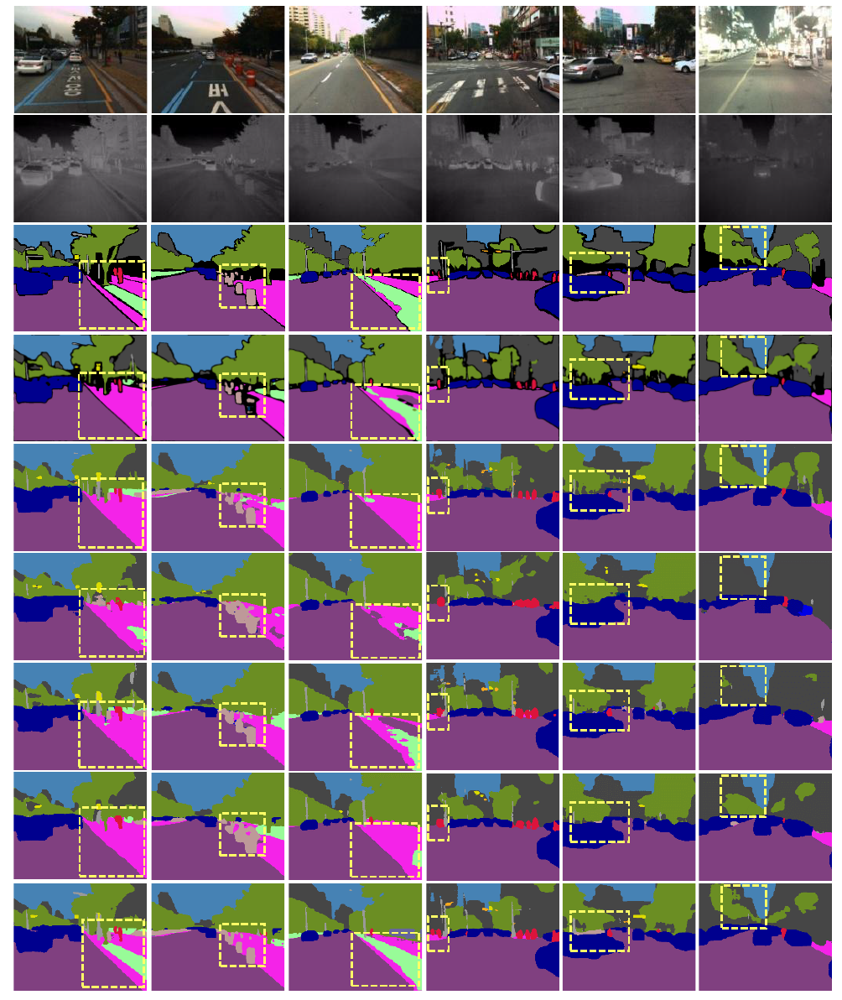
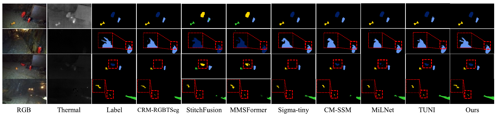
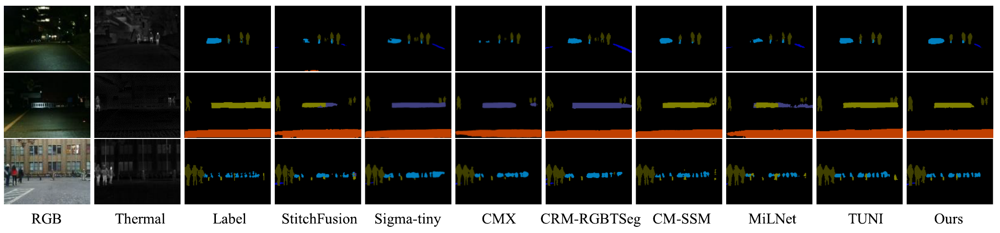
What point correction changes
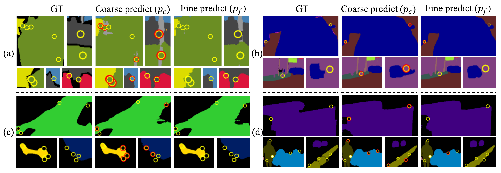
Datasets & Getting Started
FocusSeg supports four RGB–thermal segmentation benchmarks. Obtain each dataset from its original source and prepare paired RGB, thermal and label CSVs.
Environment, SAM weights, dataset preparation, training & evaluation ↗
BibTeX
@article{wang2026focusseg,
title = {Focus on the Hard: SAM-Based Prompt-Guided Refinement for RGB-T Semantic Segmentation},
author = {Wang, Yuqing and Tang, Hao and Shi, Yi and Yang, Kaihui and Han, Junwei and Zhang, Dingwen},
journal = {IEEE Transactions on Image Processing},
year = {2026},
volume = {35},
pages = {10559--10572},
doi = {10.1109/TIP.2026.3728642}
}